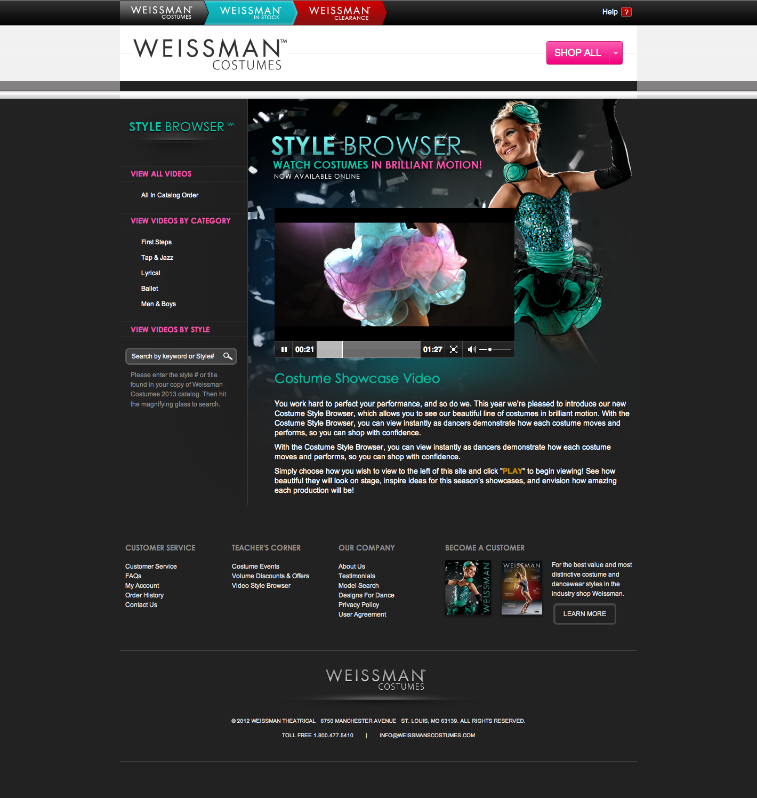

Style Browser

Project Overview
Role: UX Designer
Client: Weissman Designs for Dance
Focus: Interactive costume catalog and video showcase system
Duration: Multi-phase project with iterative design cycles
The Challenge
Weissman Designs for Dance needed a digital solution to showcase their extensive costume catalog to dance studios and directors. The traditional paper catalog was expensive to produce and distribute, difficult to update, and couldn't effectively show how costumes looked in motion.
Dance instructors needed to see costumes on real dancers performing choreography to make informed purchasing decisions, but the existing system relied solely on static product photography.
Design Process
Initial Concept Sketches
Early sketches exploring video integration concepts, search functionality, and navigation patterns
I began with hand-drawn sketches to rapidly explore different concepts for integrating video with the catalog browsing experience. These initial explorations focused on how users would navigate between video content and static product information, including ideas for "loop play through shuffle" and synchronized video segments.
Wireframes and Layout Exploration
Moving from sketches to wireframes, I explored different approaches to organizing the extensive catalog content. The key challenge was balancing the need to show many costumes at once (so users could browse efficiently) while providing enough detail for decision-making.
These wireframes tested different layouts for product details, including placement of product photography, recommended styles, and video integration. The annotations show considerations for navigation flow and feature functionality.
Wireframe showing product detail layout with navigation, imagery, and recommended styles
Design Solution
I designed an interactive Style Browser that combines a browsable costume catalog with integrated video showcases. The system allows users to explore costumes through both static imagery and performance videos, giving dance instructors the confidence to make purchasing decisions without seeing the costumes in person.
The Style Browser evolved through two major versions: a 2012 DVD-distributed desktop application and a 2013 web-based platform, each addressing different distribution needs and technical constraints.
Style Browser 2012: DVD Distribution
Distribution Strategy
The 2012 version of Style Browser was built as a desktop application packaged with an installer and distributed on over 10,000 DVDs. Each DVD was included with every Weissman Costumes physical catalog, giving dance studios a digital companion to the print materials they already relied on.
This distribution approach allowed customers to access high-quality video content without requiring fast internet connections—a critical consideration in 2012 when many dance studios still had limited bandwidth.
Video Showcase Integration
The centerpiece of the 2012 Style Browser is the integrated video player that shows dancers performing in the costumes. Users can browse videos by category (Ballet, Tap & Jazz, Lyrical, etc.) or search by specific style numbers.
The 2012 version featured a video player with a thumbnail grid showing all costumes in the current video. Users could click any costume to see it perform, with the video player showing detailed product information alongside the performance footage.
Browsable Costume Catalog
2012 grid view showing costume thumbnails with style numbers and favorites functionality
The catalog interface displays costumes in a scannable grid format with large, clear imagery. Each costume shows its style number prominently, and users can favorite items for quick reference later. The selected costume displays detailed information including fabric details, color options, and sizing information in the right panel.
Style Browser 2013: Web Platform
Platform Evolution
The 2013 version transitioned Style Browser to a web-based platform, making it accessible via the web without requiring DVD installation. This shift reflected improving internet infrastructure and allowed Weissman to update content in real-time, add new costumes instantly, and reach customers regardless of their physical catalog status.
2013 web-based Style Browser landing page with refined navigation and video integration
Enhanced Video Experience
2013 video player with synchronized costume carousel below
The 2013 version refined the video experience with a synchronized carousel at the bottom of the video player. As the video plays, the carousel highlights which costume is currently being showcased, and users can click any thumbnail to jump directly to that costume in the video.
This innovative approach allows instructors to see multiple costumes in a single viewing session while maintaining precise control over what they want to see. The web-based platform enabled smoother video streaming and more responsive interactions compared to the DVD version.
Improved Product Details
The 2013 version introduced a modal overlay for product details, replacing the side panel from the 2012 version. This design decision provides more screen space for comprehensive product information without navigating away from the browse view.
The modal includes fabric descriptions, available color options (with color swatches), sizing charts for children and adults, style numbers, and a direct "Click Here to Order" call-to-action. Multiple product images show different angles and on-model photography.
Consistent Navigation
Both versions feature a persistent left sidebar providing quick access to all navigation options and search functionality. Users can search by style number, browse by category, or filter by specific attributes. The interface maintains context as users navigate between browsing modes, ensuring they never lose their place in the catalog.
Key Features Across Both Versions
- Integrated video player showing costumes in performance
- Click-to-jump functionality allowing users to navigate directly to specific costumes in video
- Browse by category (First Steps, Tap & Jazz, Lyrical, Ballet, Men & Boys) or search by style number
- Favorites system for marking costumes of interest
- Comprehensive product details including fabric descriptions, color swatches, and sizing charts
- Large, high-quality imagery showing costume details from multiple angles
- Seamless navigation between video and catalog views
- Direct ordering integration with calls-to-action
Impact
Evolution and Refinement
The Style Browser evolved significantly between the 2012 DVD and 2013 web versions. Through user research with dance instructors and studio directors, I refined the interface based on:
- Feedback on information hierarchy and costume detail needs from 2012 users
- Observations of how instructors browsed the DVD version
- Testing of video integration and synchronized playlist functionality
- Technical capabilities and constraints of web platforms versus desktop applications
- Performance optimization for video streaming over internet connections
- Introduction of modal overlay design for better product information display
- Improvements to video navigation with the synchronized carousel feature
The transition from DVD to web also brought business benefits: Weissman could now update the catalog instantly, track usage analytics, and eliminate the costs of DVD production and physical distribution.
2012 DVD Version
- Distributed on over 10,000 DVDs to dance studios nationwide
- Provided high-quality video access without requiring fast internet connections
- Complemented physical catalogs with digital interactivity
- Increased customer confidence in purchasing decisions through video showcases
- Reduced product returns by showing costumes in motion
- Differentiated Weissman from competitors still using traditional print-only catalogs
2013 Web Version
- Eliminated DVD production and distribution costs
- Enabled immediate catalog updates when new styles were released
- Provided 24/7 access to the complete catalog for customers worldwide
- Allowed usage analytics to inform future design decisions
- Reached customers who might not have received physical catalogs
- Positioned Weissman as a technology-forward leader in the dance costume industry